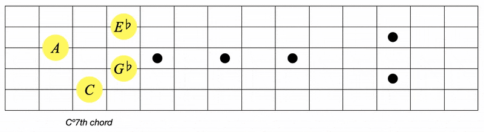

COLOURS:
Primary colours = Notes related by minor 3rds
This is the foundation for all of metaharmony
Learning outcome: Notes are either yellow, Red or Blue
We start by taking the 12 notes of the piano and splitting them into three groups
starting on C we ascend in semitones cycling: yellow, red, blue, yellow, red, blue...

Each colour group is a Diminshed 7th chord (º7th) which is simply a stack of minor 3rd intervals
in other words, each yellow note is 3 semitones away from the next.
Here's the shape we played on guitar
explore this with the blue and red notes.
Here's the tab of what we just played on guitar
I think it's really helpful to visualise this on the circle of 5ths (try to focus on one gif at a time...)

You can see the symmetrical square nature of the 4 notes of each colour
(This comes into play when we build the geometries)